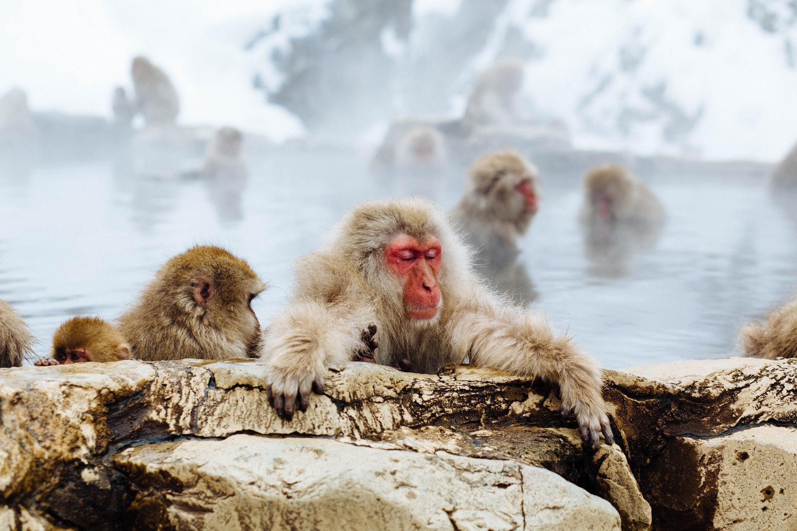

Animal Environmental Science
Last update: 2019-09-05
Welcome
This is the website for “Animal environmental science”. To understanding individual animals, we have to understand the relationship they have with their environment. This book will focus at the interaction between animals and the environment.
CAUTION: This website is now in progress. Some paragraphs borrowed the content and sentence from multiple author’s as it is. However, it will be changed in the near future. This website is (and will always be) free to use, and is licensed under the Creative Commons Attribution-NonCommercial-NoDerivs 3.0 License. The book is written in RMarkdown with bookdown. Some photographs used in this book was from Unsplash.com. If you click the download button up above, you can download the PDF version of the book.

(Snow Monkey Niseko, Kutchan-chō, Japan)
0.1 Presentation files
- 01 Animal and environment
- 02 Temperature
- 03 Genetics, nutrition, and environment
- 03 Light
- 04 Human, animal, and environment
- 04 Sound
- 05 Air quality
- 06 Water quality
- 06 Feed
- 07 Cycles of materials
- 08 가축분뇨 자원화
- 09 축산냄새